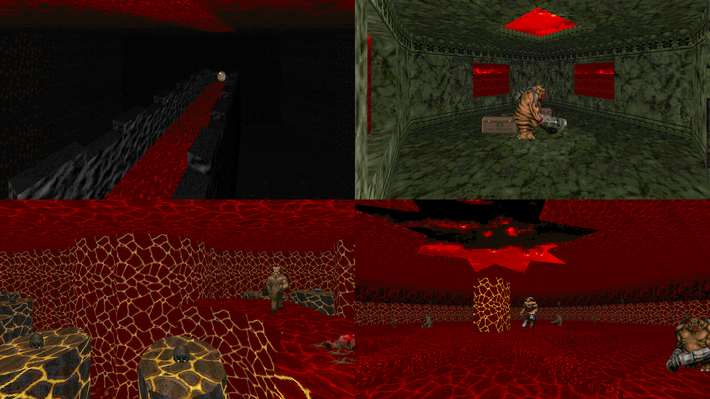

DOWNLOAD LINKS



| Year | 2011 |
| IWAD | Doom II |
| Source port | ZDoom |
| Game mode(s) | Single-player |
| Map(s) | MAP01 |
Hell’s Asylum was my first dive into the wonderful world of ZDoom mapping, back when UDMF wasn’t everyone’s mapping format of choice, let alone a thing. What we have here is a large-ish map with lots of variety in its texture usage and some of the best gameplay I think I’ve ever implemented, if I do say so myself.
The map makes fairly heavy use of ACS in order to mix up the otherwise quite ordinary Doom gameplay. New monsters spawn in previously visited areas, so as to hint where the player should go next. New pathways open up by other means than simply pressing a switch. The map even throws a couple of traps at the player. Worry not, though, for the traps are avoidable.